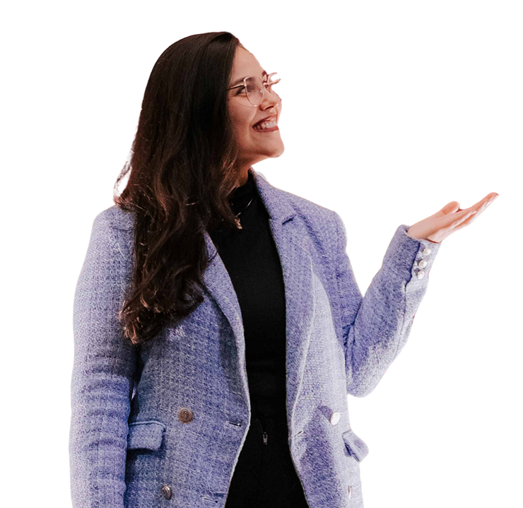
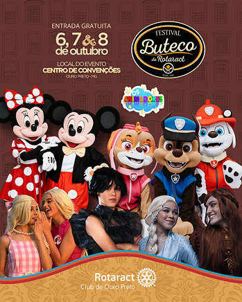
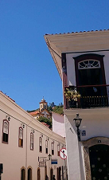
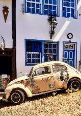
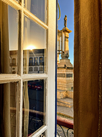
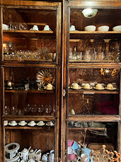
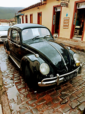
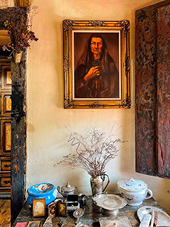
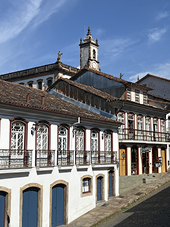
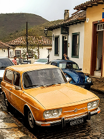

Conexão
Antes de qualquer negociação, existe uma pessoa. Procuro compreender necessidades, ouvir diferentes perspectivas e estabelecer relações de confiança.
Gerente Comercial · Desenvolvimento de Negócios
Entre comunicação, eventos, marketing e vendas, construí uma visão ampla sobre pessoas e negócios. Hoje, uso essa bagagem para aproximar empresas de novas oportunidades.

Foto principalMarketing e comunicação

Sobre mim
Atuo na interseção entre desenvolvimento de negócios, comunicação, marketing e gestão de projetos, transformando estratégias em resultados por meio da construção de parcerias, da otimização de processos e da execução de projetos de alto impacto.
Tenho experiência em planejamento e produção de eventos, gestão de comunicação e marketing, prospecção comercial, relacionamento com stakeholders, estruturação de processos e liderança de equipes.
Acredito na comunicação como ferramenta para gerar valor, fortalecer marcas e impulsionar o crescimento de negócios.
Trajetória profissional
Uma trajetória de aprendizados, desafios e conexões que se complementam.
Atuo na conexão entre empresas e soluções que contribuem para uma gestão mais estruturada e eficiente. Meu trabalho começa com uma conversa: entender o momento da empresa, conhecer seus desafios e identificar oportunidades. Acredito que uma boa parceria comercial não começa com uma proposta, mas com a compreensão de quem está do outro lado.
Vamos conversar sobre o seu negócio?
Falar pelo WhatsAppDesenvolvi a estratégia comercial unindo venda consultiva, inteligência comercial, marketing e relacionamento com clientes no mercado B2B. Conduzi vendas em gestão financeira empresarial, estruturei processos e fluxos comerciais, gerenciei o CRM com indicadores como CAC, LTV e taxa de conversão, coordenei a Coalizão Empreendedora e estruturei o Menver Club.
Atuei no planejamento, produção e execução de eventos corporativos e institucionais, como FESTUR Ouro Preto, Semana do Produtor Rural Cooprovi e Minas de Negócios Turmalina. Integrei desenvolvimento de negócios, comunicação e marketing, da captação de patrocínios à comunicação com expositores, imprensa e participantes.
Gerenciei a praça de alimentação e o desenvolvimento comercial de eventos: prospecção e negociação com fornecedores e empresas para a comercialização de stands, acompanhamento de sistemas de vendas e alinhamento entre as equipes de organização, comercial e operação.
Na Coopax, plataforma de inovação tecnológica para o setor de eventos, atuei em comunicação, marketing e gestão de processos: apliquei Scrum, melhorei o fluxo comercial, validei funcionalidades da plataforma e colaborei com equipes multidisciplinares.
Na Secretaria Municipal de Cultura e Turismo, fiz a produção de conteúdo e a cobertura oficial do Carnaval 2024: fotos e vídeos, cobertura em tempo real, entrevistas com artistas e autoridades e divulgação da programação nas plataformas digitais.
Transformei um evento de um dia em um festival de três dias, com mais de 30 expositores e 15 atrações culturais, cuidando de patrocínio, regularização (IPHAN e Corpo de Bombeiros) e equipes. Essa base me levou à produção de eventos como FESTUR Ouro Preto e Minas de Negócios.
Minha formação em Turismo na UFOP despertou meu interesse pelo comportamento das pessoas e pela construção de experiências positivas. No setor educativo do Museu Boulieu, conduzi visitas mediadas e oficinas, adaptando a comunicação a diferentes públicos.
Como voluntária à distância no programa Latinos Resilientes, que apoia a integração de imigrantes nos Estados Unidos, criei materiais gráficos, gerenciei as redes sociais e apoiei imigrantes na elaboração de currículos e na preparação para processos seletivos.
Diferenciais profissionais
Minha forma de trabalhar combina diferentes experiências em uma abordagem humana, estratégica e orientada a resultados.
Antes de qualquer negociação, existe uma pessoa. Procuro compreender necessidades, ouvir diferentes perspectivas e estabelecer relações de confiança.
Minha trajetória em diferentes áreas me permite enxergar oportunidades por diferentes perspectivas e compreender melhor os desafios de cada negócio.
Acredito que boas soluções precisam ser acompanhadas de uma comunicação clara. Saber ouvir e transmitir valor faz parte de qualquer relacionamento comercial.
Valorizo relações construídas com transparência, proximidade e compromisso. Meu objetivo não é apenas iniciar uma negociação, mas construir parcerias duradouras.
Ouro Preto · Experiências e momentos








Contato
Seja para conhecer meu trabalho, conversar sobre negócios ou construir uma nova parceria, será um prazer conectar nossas ideias.